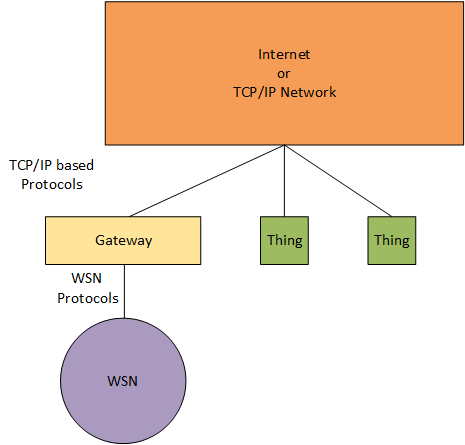
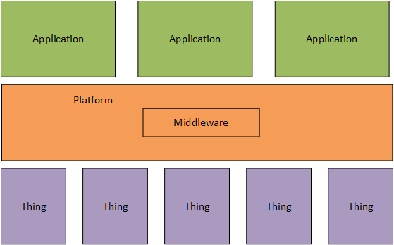

Introduction to
Internet of Things Platforms
Parham Alvani
@1995parham
Parham Alvani
parham.alvani@gmail.com
Who I am?
school BSc. Software Engineering @ Amirkabir University of Technology
school MSc. Computer Networks @ Amirkabir University of Technology
school PhD. Computer Networks @ Amirkabir University of Technology
domain Have been in IoT/Platforms since June 2015 (Ordibehesht 1394)
Let's Light the Lamp
- IoT Big Picture
- IoT Platforms, What & Why?
- Connectivity
- Data/Things Management
- APIs/Users/Analytics/...
- Review on Popular Platforms
- IoT Big Picture
- IoT Platforms, What & Why?
- Connectivity
- Data/Things Management
- APIs/Users/Analytics/...
- Review on Popular Platforms
IoT?!
The Internet of things (IoT) is a system of interrelated computing devices, mechanical and digital machines provided with unique identifiers (UIDs) and the ability to transfer data over a network without requiring human-to-human or human-to-computer interaction.
History
- So far, the Internet of Things has been most closely associated with machine-to-machine (M2M) communication.
- Although the concept wasn’t named until 1999, the Internet of Things has been in development for decades.
Future
- The definition of the Internet of things has evolved due to the convergence of multiple technologies:
- real-time analytics
- machine learning
- commodity sensors
- and embedded systems
IoT’s Applications
- Environmental monitoring
- Infrastructure management
- Smart metering
- Precision agriculture
- Manufacturing
- Energy management
- Medical and healthcare systems
- Building and home automation
- Transportation
- ...
IoT Big Picture

Devices
- Sensors, Actuators, etc.
- Design from scratch
- Build with ready-made hardware like Arduio, Raspberry Pi, etc.
- You need to be familar with Electerical and Hardware engineering
Connection
- Zigbee, ZWave, nRF, etc.
- MQTT, HTTP and etc. over IP
- You need to know about Networking and Protocol Stack
Platform
- Kaa, Thingsboard, etc.
- You need to be familar with Backend even Frontend development technologies
Application
- Machine Learning, Data Mining, etc.
- Provide intelligence in IoT Stack
- IoT Big Picture
- IoT Platforms, What & Why?
- Connectivity
- Data/Things Management
- APIs/Users/Analytics/...
- Review on Popular Platforms
Why are we using smart things alone?
The IoT technologies in sync up with cloudinfrastructures are to result in people-centric smarter environments.
IoT Maturity Model
Primitive Sensor
- Siloed Sensors
- Isolated M2M Applications
- Limited Functions
Tentative Kaa
- Connected Devices
- Units Inter-communicated
- Lightweight Protocols
Advanced OpenRemote
- Managed Service
- Secured Remote Management
- Reliable QoS
IoT Maturity Model
Dynamic Dashboard
- Smart Decision
- Contextual Analytics Applied
- Harvest of Knowledge and Insights
Optimized Rule Engine
- Converged Tech.
- Interplay with Other Disciplines
- Unified Intelligent Solutions
What is an IoT platform ?
In simple words the purpose of any IoT device is to connect with other IoT devices and applications (cloud-based mostly) to relay information using internet transfer protocols.
The gap between the device sensors and data networks is filled by an IoT Platform.
What is thier job ?
- Developers can develop their applications with ease
- End-users can see his/her dashboard and customize it
- The government can provide regulation on data
Platforms in bigger scope
As we mentioned earlier, platforms can be used in a governmental scope.
- Data Regulation and Governance
- IoT Operators
- Rules and regulations applies on IoT Operators instead of Customers
Foucs on Service
Platforms must provide service to customers, and customers use these services to implement their unique applications.
Platforms Components/Services
There is no specific standard for platform architecture. Here we use a de-facto standard for having a better arrangement of materials.
- Layer 1:
- Connectivity
- Layer 2:
- Data Management
- Things Management
- Layer 3:
- Accounting
- User/Project Management
- Application Programming Interface
- Analytics
- IoT Big Picture
- IoT Platforms, What & Why?
- Connectivity
- Data/Things Management
- APIs/Users/Analytics/...
- Review on Popular Platforms
IoT Platforms Features
- Support of heterogeneous devices
- LoRa things that send thier data using cbor
- nRF nodes that send their data in unreliable way
- ...
How to connect?
Many ways 😱
- LoRa, nRF, Ethernet, ...
- Custom, IP, TCP, HTTP, MQTT, CoAP, ...
One Solution 🤓

Gateways
Gateways
- By using gateways every non-TCP protocol can be changed to TCP
- By using gateways every non-(HTTP MQTT ...) protocol can be changed to (HTTP MQTT ...)
- Gateways can act in may OSI layers
How to communicate?
Many ways 😱
- JSON
- CBOR
- ASN.1
- ...
JSON?
{
"timestamp": "Mon Feb 20 21:35:00 1995",
"states": {
"temperature": 24,
"humidity": 10
}
}{
"temperature": 24,
"humidity": 10,
"status": "online"
}{
"101": 10,
"102": 10,
"103": 1024,
"201": 1.24
}CBOR?
{
"101": 10,
"102": 10,
"103": 1024,
"201": 1.24
}A4 # map(4) 63 # text(3) 313031 # "101" 0A # unsigned(10) 63 # text(3) 313032 # "102" 0A # unsigned(10) 63 # text(3) 313033 # "103" 19 0400 # unsigned(1024) 63 # text(3) 323031 # "201" FB 3FF3D70A3D70A3D7 # primitive(4608263282710586327)- Things-Platform Interoperability
- Generated SDK
- Library
- Custom Encoder/Decoder
- Thing Data Validation
- Models
Which protocol must we use for connectivity?
- WSN Protocols
- TCP/IP Based protocols
Protocols in TCP/IP based Platforms
Can you build an IoT system with familiar Web technologies?
- Yes you can, although the result would not be as efficient as with the newer protocols.
- But efficiency depends on our agents and things
- At the end, what we want to connect ?
Review on some protocols
TCP/IP Based for agent/platform communication
- CoAP
- UDP - Rqst/Rspnse
- MQTT
- UDP - Pub/Subsrb
- HTTP
- TCP - Rqst/Rspnse
- SNMP
- UDP - Rqst/Rspnse
IoT Platforms vs IoT Middlewares
- Middleware connects different, often complex and already existing programs that were not originally designed to be connected.
- Middleware is part of the architecture enabling connectivity for huge numbers of diverseThings by providing a connectivity layer for sensors and also for the application layers that provide services that ensure effective communications among software.
IoT Platforms contains IoT Middlewars
Middleware is a connectivity layer
- IoT Big Picture
- IoT Platforms, What & Why?
- Connectivity
- Data/Things Management
- APIs/Users/Analytics/...
- Review on Popular Platforms
IoT Platforms Features
- Low Level Services: Services that interact with Things
- Data Collection
- Monitoring
- Event Delivering
- (Thing) Discovery
Data?!
- IoT Sensors generate large amount of time-series data
Where to store things data?
- Relational Databases
- PostgreSQL
- MySQL
- Document-based Databases
- MongoDB
- Column-based Databases
- Cassandra
Sharding vs Replication

Things Management
- Discovers the things that are connected to network
- Checks the status of the things and alert if they go down
- Updates things framework Over-the-Air
- Performs control actions over them like restart, ...
- etc.
- IoT Big Picture
- IoT Platforms, What & Why?
- Connectivity
- Data/Things Management
- APIs/Users/Analytics/...
- Review on Popular Platforms
IoT Platforms Features
- (Data) Access Control
- API
- ReST (Representational State Transfer)
- RPC (Remote Procedure Call)
- Big Data Streaming
IoT Platforms Features
- Open Source
- Deployment Type:
- PaaS (Platform-as-a-Service)
- SaaS (Software-as-a-Service)
- Local Installation
Services in this layer have similar challenges to web applications.
Users and Access Management
- Role-Based Access Control
- Attribute-based Access Control
- ...
Application Programming Interfaces
- Many Ways: ReST/gRPC/GraphQL/...
- Push/Pull Based:
- Applications pull platform for new data/events
- Platform pushes new data/events to applications
Big Data Streaming
Kafka
A streaming platform has three key capabilities:
- Publish and subscribe to streams of records, similar to a message queue or enterprise messaging system.
- Store streams of records in a fault-tolerant durable way.
- Process streams of records as they occur.

Batch Processing
- High Latency
- Static Files
Stream Processing
- Low Latency
- Event Streams
Apache Spark
- Apache Spark achieves high performance for both batch and streaming data
Apache Flink

Programs and Dataflows
- The basic building blocks of Flink programs are streams and transformations.
- A stream is a (potentially never-ending) flow of data records.
- A transformation is an operation that takes one or more streams as input, and produces one or more output streams as a result.

Windows
- Aggregating events (e.g., counts, sums) works differently on streams than in batch processing.
- Aggregates on streams (counts, sums, etc), are scoped by windows
- count over the last 5 minutes
- sum of the last 100 elements

Data Processing Pipeline
Batch as a Special case of Streaming, processing bounded and unbounded data streams in Apache Flink

- IoT Big Picture
- IoT Platforms, What & Why?
- Connectivity
- Data/Things Management
- APIs/Users/Analytics/...
- Review on Popular Platforms
Real platform architecture
Platforms Components
- Conectivity and Normalization
- Agents and libraries that ensure constant object connectivity and harmonized data formats
- Device Management
- Backend tool for the management of device status, remote software deployment and updates
Platforms Components
- Processing and action mamagement
- Rule engine that allows for (real-time) actions based on incoming sensor and device data
- Data visualization
- Graphical depiction of (real-time) sensor data
Platforms Components
- Analytics
- Algorithms for advanced calculations and machine learning
- Additional tools
- Further development tools (e.g., app prototyping, access management, reporting)
Platforms Components
- External interfaces
- APIs, SDKs and gateways that acts as interfaces for 3rd party systems
- Database
- Repository that stores the important data sets
Kaa


Kaa [Wikipedia]
Kaa is a fictional character that Rudyard Kipling describes him as an exceptionally long, yellowish Indian rock python.
Kaa [Kaa]
100% open-source Internet of Things middleware platform for everyone.
What is Kaa?
- Reliable foundation for developing your connected products.
- Transport-agnostic link between the hardware and application worlds.
- Much more than just a message bus.
- Customizable middleware that implements necessary functional patterns for the IoT.
- Cloud enablement software for your hardware products.
Kaa Architecture
Kaa Server
The Kaa server acts as a foundation for your custom-tailored IoT back-end system. It offers a number of mechanisms for internal customization and integration with external systems:
- REST interfaces for integration with product-specific services
- Log appenders for integration with analytics
- pluggable implementations of custom transports
Kaa Server
The Kaa server was designed to handle millions of connected devices under peak pressure without ever getting tired.
Kaa Data Model
- Works with structured and unstructured data
- Well-structured data provides excellent material for any manipulation and analytics
- This kind of data also helps abstract out any unimportant details of the low-level implementation and your hardware.
- Kaa ensures that even gadgets based on very different technologies can be managed and operated identically, as long as they share the same set of data schemas.
Kaa Generated SDK
- Kaa endpoint SDKs are available in Java, C++, and C, and are designed to be embedded into your client application (or firmware).
- They handle client-server communication, authentication, data marshalling, encryption, persistence, and other functions provided by the platform.
What does kaa do for us?
- Messaging across endpoints
- Notification
- Collecting data from endpoints
Messaging across endpoints

Messaging across endpoints
- Kaa allows for delivery of events, which are structured messages, across endpoints
- The event className family can be used by one or multiple applications, thus the event can be shared between applications
Notification
Notification
- Kaa uses notifications to distribute structured messages, posted within notification topics, from the server to endpoints
Collecting data from endpoints

Collecting data from endpoints
- Kaa provides rich capabilities for collecting and storing structured data from endpoints
- The data collection subsystem in Kaa is designed to collect records (logs) of pre-configured structure
- it store them in the client, transfer from the client to Operations service, persist on server for further processing, or submit to the immediate stream analysis
Distribution Method
- Open Source
- PaaS
- The ground-breaking Kaa 1.0.0 will be available soon for the pre-release trial among early subscribers.
Let's learn it in code
2 Main Pieces
- Kaa SDK (Agent)
- Kaa Server
Thingsboard
What is ThingsBoard?
Open-source IoT Platform - Device management, data collection, processing and visualization.
What does thingsboard do for us?
- Provision and manage devices and assets
- Provision, monitor and control your IoT entities in secure way using rich server-side APIs.
- Define relations between your devices, assets, customers or any other entities.
What does thingsboard do for us?
- Collect and visualize data
- Collect and store telemetry data in scalable and fault-tolerant way.
- Visualize your data with built-in or custom widgets and flexible dashboards.
- Share dashboards with your customers.
What does thingsboard do for us?
- Process and React
- Define data processing rules and trigger reactions using plugins.
- Raise alarms on incoming telemetry events or attribute updates.
- Enable use-case specific features using customizable rules and plugins.
What does thingsboard do for us?
- IoT Gateway
- Integrate devices connected to legacy and third-party systems using existing protocols.
Supported Protocols
- MQTT
- CoAP
- HTTP

IoT data analytics using Apache Spark, Kafka and ThingsBoard
Home-Assistant

What is Home-Assistant?
Open-source home automation platform running on Python 3
What does Home-Assistant do for us?
- Home Assistant will track the state of all the devices in your home, so you don't have to
- Control all your devices from a single, mobile-friendly, interface
- Set up advanced rules to control devices and bring your home alive.
Automating Home Assistant
(trigger) When Paulus arrives home (condition) and it is after sunset: (action) Turn the lights in the living room onMicrosoft Azure
IoT Hub

Connect, monitor, and manage billions of IoT assets
- Establish bi-directional communication with billions of IoT devices
- Work with familiar platforms and protocols
- Open-source device SDKs for multiple platforms
- HTTP, Advanced Message Queuing Protocol (AMQP), and MQ Telemetry Transport (MQTT)
- Authenticate per device for security-enhanced IoT solutions
- Manage your IoT devices at scale with device management
- Extend the power of the cloud to your edge device